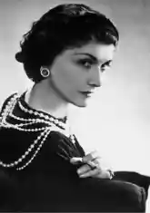
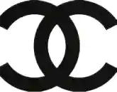
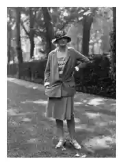

Parmi les figures du féminisme, nous connaissons une femme qui a su révolutionner la mode féminine. Elle a su apporter des lettres de noblesse aux femmes aux foyers avec ses vêtements. Les femmes cadres ont pu aussi acquérir des vêtements d'un standing sans égal. Même si cela pouvait faire scandale dans les entreprises avec les hommes. Cette femme est française, une créatrice de mode qui a pu créer sa propre ligne de conduite dans la mode. Elle s'appelle
Coco Chanel, et elle est une figure du féminisme grâce à sa participation dans la mode. Nous allons donc en apprendre plus sur elle.
Le parcours d'une femme de la mode

Illustration de coco chanel
Cette femme, Coco Chanel, est née en 1883 à Saumur (Maine-Et-Loire). Elle a parcouru une enfance des plus troubles, mélangeant mort de proche et orphelinat.
Cela ne l'empêchera pas d'apprendre la couture, étant surnommée "cousette". Jeune couturière, elle devait tenter de trouver un style qui devait aller à l'encontre de l'époque.
Elle créera une première entreprise en 1910, avec l'aide de son amant de l'époque Boy Chapel. Son nom de couturière "Coco Chanel", elle le doit à des officiers lors d'un spectacle au sein d'un café-concert dans Paris. Cela va donner le nom qu'elle portera dans la couture. Alors que son entreprise commencera par s'appeler avec son vrai nom, Gabrielle Chanel (audodidacte).
Par la suite, son entreprise va grandir dans les années 30. Puis en 1940, ce sera l'ouverture de nouvelles boutiques et de sa première maison de couture. Elle se permet même de mélanger travail et multiples relations amoureuses sur de brefs périodes alors qu'elle avait perdu son premier compagnon en 1919. Cet évènement l'avait profondément renforcé dans son travail et pour pouvoir créer son style unique.

Logo actuelle de la marque
Durant ses trente dernières années, elle se contente de poursuivre son style de couture. Malgré les étoiles montantes qui lui faisaient de l'ombre, elle poursuivit. Elle termine sa vie en 1971 à l'hôtel Ritz (Paris). Alors que sa marque poursuit sa route dans notre société moderne.
La mode unique de Coco
Elle est une féministe de son époque, tant qu'elle était surnommée la "reine du genre pauvre". Son style est avant tout basée sur un ingrédient des plus uniques : le code vestimentaire masculin. Elle a eu l'idée suprême de "convertir" cette mode de garçons pour les femmes.D'un côté, on a les vêtements classiques féminins mais qui ont été modifiées avec le code vestimentaire masculin. De l'autre, on les vêtements qui ont été complètement appropriées par Coco pour devenir des vêtements féminins.
Gabrielle a incité les femmes à avoir les cheveux courts, mais ça ne suffit pas. Coco veut littéralement libérer la femme de cette mode de femme au foyer ou de travail.
Son style est notable grâce à la "Petite robe noire", la "marinière, l'usage des pantalons pour femme.
On peut aussi ajouter "le tailleur en tweed", dont elle ajoutait bijoux de contrefaçon de ses amis bijoutiers.

Tailleur en tweed (1954)
De se dire que la femme peut porter des vêtements d'homme ayant un style pour elles, cela apporte la fameuse révolution « liberté ». Des figures comme
Elsa Schiaparelli ou Christian Dior auraient pu l'arrêté dans sa progression. Mais cela ne s'est pas produit, car elle a pu supprimer le corset, raccourcit les jupes et efface la taille.
On ne pourra pas oublier son second talent dans la parfumerie, grâce à des parfums comme la Chanel "N°5". Le parfum a été son gagne-pain durant la seconde guerre mondiale. Ses parfums ont pu accompagner des stars, comme Marilyn Monroe et qu'elle s'en mettait des gouttes (N°5) durant la nuit. Bref, son style a rendu accessible une mode plus large et ouverte aux femmes. Cela s'accorde à cette citation de François Baudot pour conclure :
"L'allure de Channel consiste à affirmer, à travers des lignes souvent réduites à leur plus simple expression, que la manière de porter un vêtement est infiniment plus importante que ce qu'on porte. Qu'une jolie silhouette vaut mieux qu'un visage parfait [..] Ce style Chanel doit beaucoup de sa longévité à sa logique fonctionnelle. A la dimension pratique qui a toujours su s'accorder au rythme des préoccupations contemporaines."